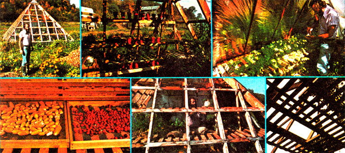

You wouldn't expect to find a pyramid (of all things) in a hollow in the mountains of West Virginia . . . but there it is: a tall, triangle-shaped, wood and Plexiglas structure sitting in the middle of a field. It's Bill Warren's "Giza Greenhouse".
Bill didn't build his greenhouse in the form of a pyramid in order to harness "pyramid power" (though strange things have occurred inside the structure) ... rather, he built the little conservatory the way he did for reasons of strength. You see, Bill once undertook the construction of a standard vertical-wall greenhouse on his farm . . . but just before he finished it, a 74-mph gale picked the building up and flung it 100 yards across the hollow. That's when Bill decided to build his next greenhouse in the shape of a pyramid.
"I've read where some people claim that a dome is the strongest type of structure," says Bill: "But I wonder if the pyramid isn't actually more rugged. A dome consists of many small triangles, whereas the pyramid uses four large triangles that lean against each other." Suffice it to say, Bill Warren's latest greenhouse hasn't blown away yet . . . and it doesn't look as if it ever will.
The hothouse-which has the same proportions as the Great Pyramid of Giza -measures 16' on a side at the base and 11' high. This gives its walls a slope of 51°. The building's framework-four 2 X 8's with 2 X 6 and 2 X 4 bracing-is covered on three sides (east, south, and west) by .010"-thick Plexiglas, and on the north side by heavy roll roofing. (The north wall is insulated and features ;reflective backing on its inner surface,to help hold and distribute sunlight and Btu's inside the building during winter months.) The whole structure rests atop 2'-tall vertical support walls made of 1 "-lumber. (Which makes the unit's overall height 13'.),
Inside the greenhouse !s a 6-1/2'. square secondstory platform or "loft" which can be used for sleeping and/or dehydrating foods. A humid greenhouse may not seem the !deal place to dry crops, but Bill has had excellent luck drying corn, popcorn, zucchini, tomatoes, peas, herbs, and peppers in the upstairs portion of his pyramid. (He doesn't grow plants upstairs, however, because it's too inconvenient to water elevated trays and pots.)
In the winter, Bill Warren heats his 256. square-foot nursery with a gas-f! red space heater. (The gas itself is free: It comes with the property.)
in his first season (1976), Bill raised a variety of plants for personal use, but only tomato seedlings for sale to the public. The few plants he sold, howeverabout 100 dozen altogether-made his customers mighty happy. "We had people tell us they'd bought seedlings from other sources and that those plants died, while ours didn't!" Bill recalls.
Over the winter, Bill grows tomatoes, melons, herbs, sunflowers, and a few other items in his pyramid. He also starts garden plants for resale (and for his own garden) throughout late winter and early spring. (Warren starts his plants in pots on slatted shelves, then moves them to the greenhouse's earth floor.) Chemical plant foods are never used . . . Instead, Bill prefers to grow seedlings in soil fortified with composted manure. So far, insects haven't been a problem .: . nor have unpleasant odors.
One surprising bit of information surfaced not long ago when Bill performed an experiment .in the greenhouse . . . an experiment in which six different kinds of seeds (sunflower, garbanzo, lima bean, corn, pea, and squash) were grown in trays at 12 heights from floor to apex. Plant: performance ranged from good at the very lowest level of the pyramid to poor at a height of 3' and very poor at 5' and 6' above ground. Thenunexpected. ly--performance went from poor at the 7' level to good at 8' and 9' and excellent at 10', 11', and 12'. So far, no one has been able to explain these results.
Even harder to explain is the pyramid's effect on its human occupants. Says Bill: "I personally had severe headaches such as I never had before when I began working in the greenhouse, and I was not able to get rid of them for a long time. Gail, on the other hand, noticed that every time she went !n there she felt very relaxed. I didn't notice this effect until I started to build the loft.
"Also, our nephew pointed out to us that he had vivid dreams when he slept in the pyramid ... and soon thereafter, we had them too! After we'd been sleeping there awhile, though, we became accustomed to it, and these unusual effects stopped."
And then there are the worms. "We've noticed that on nights when there's a light rain or drizzle, worms will crawl up the sides of the structure. Dozens of 'em crawl up, covering the whole thing. Then -in the morning, when it gets light-they start back down again."
What effect has the Giza Greenhouse had on neighbors and friends? According to Bill, the Plexiglas pyramid !s "notorious" ...local people don't quite under- stand it. In fa, they think it's downright peculiar.
That doesn't bother Bill Warren, though, as long as the natives keep coming to buy plants (which they do) . . . and as long as they're happy with the seedlings they buy (which-apparently-they are).
The pyramid greenhouse: For Bill Warren, it's the only kind worth having!
|
 |
|
|